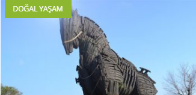
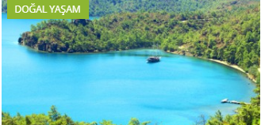
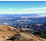
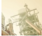
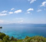
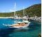

ANASAYFA
|  |  |
| Büyük Ozan Homeros’un epik eserleri İliada ve Odysseia ile ölümsüzleşen Troya, Troyalılarla Akaların (Yunanlılar) on yıl süren savaşlarındaki kahraman savaşçıların… | Gökova Özel Çevre Koruma Bölgesi; Muğla ili, Ula ve Marmaris ilçeleri ve bunlara bağlı 3… |
|  HONAZ DAĞI MİLLİ PARKI | İKLİM DEĞİŞİKLİĞİ NEDİR? |
|  KUŞADASI MİLLİ PARKI | ÇEVRE KİRLİLİĞİ ÇEŞİTLERİ |
| MİLLİ PARK LİSTESİ | HAVA KİRLİLİĞİNİN ÇEVRE VE İNSAN SAĞLIĞINA ETKİLERİ |